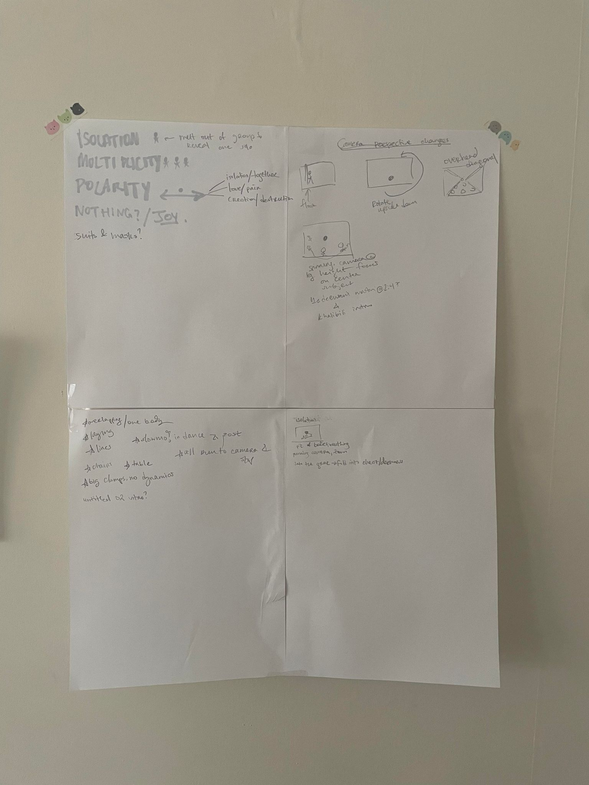
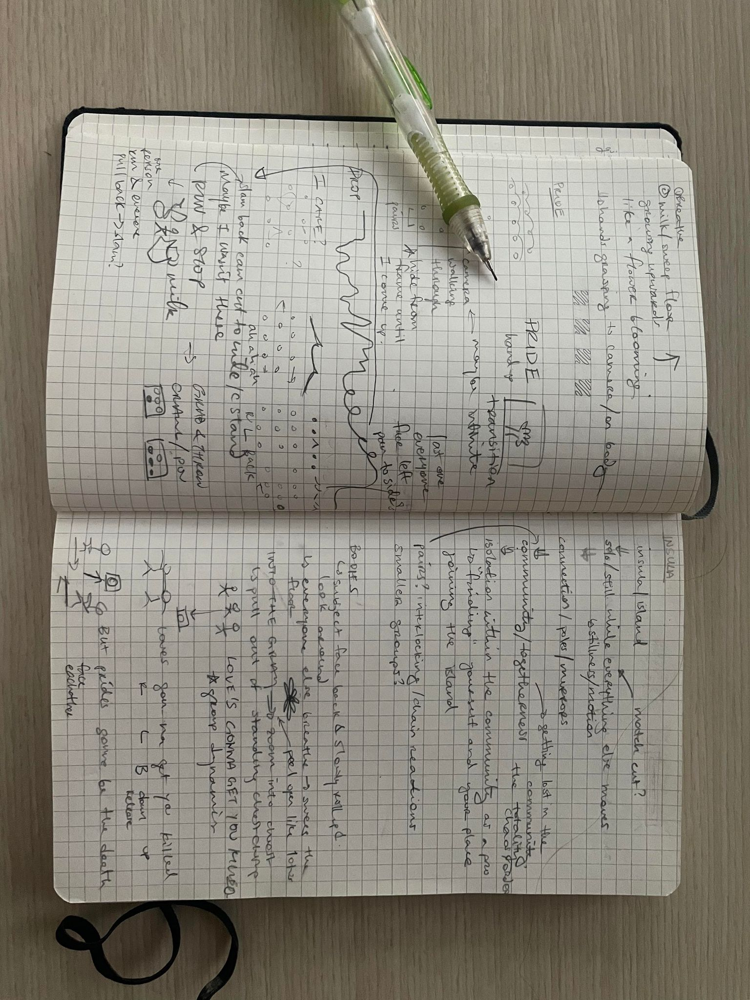
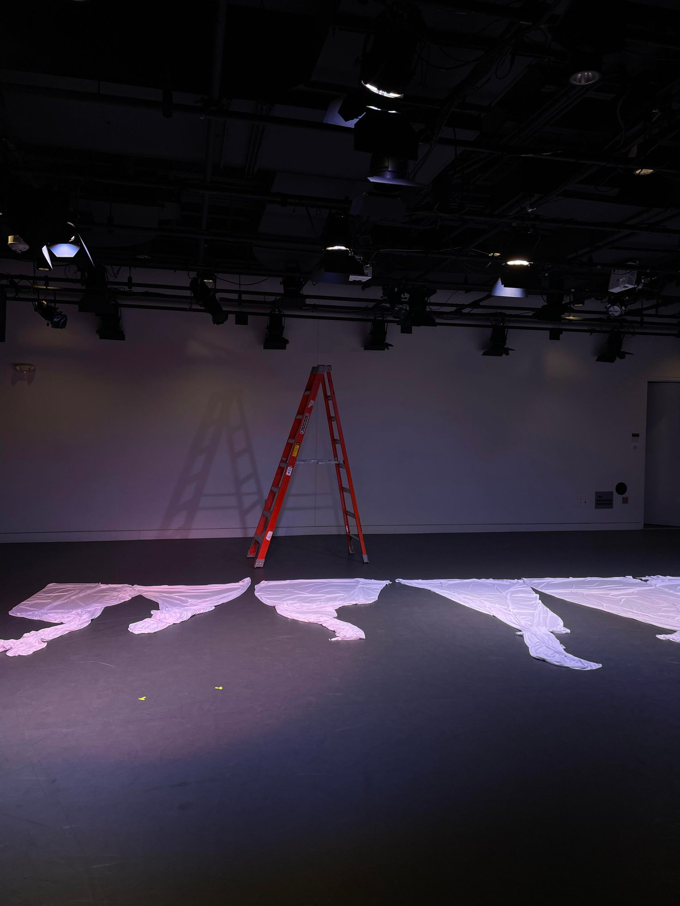
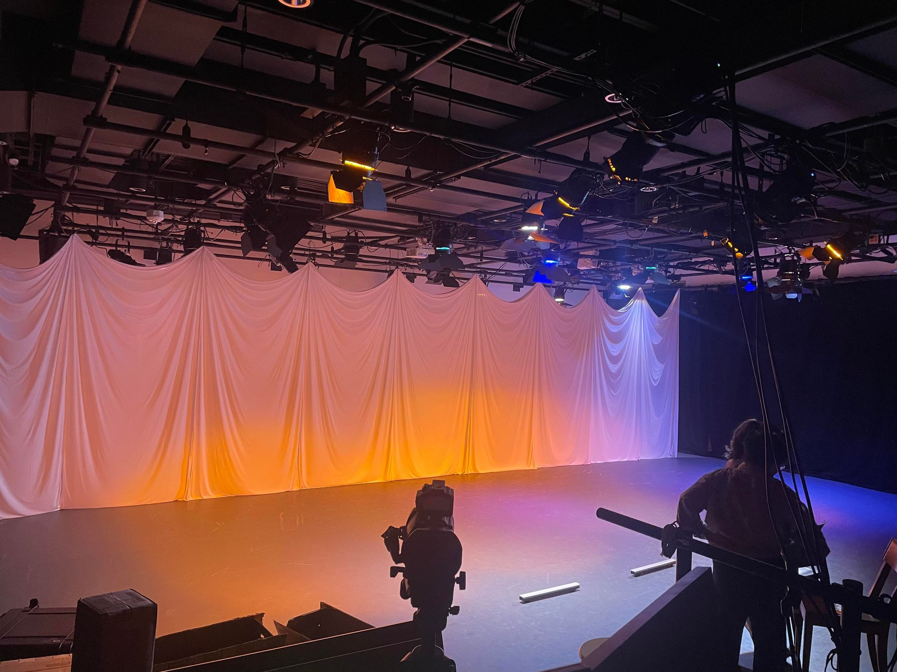
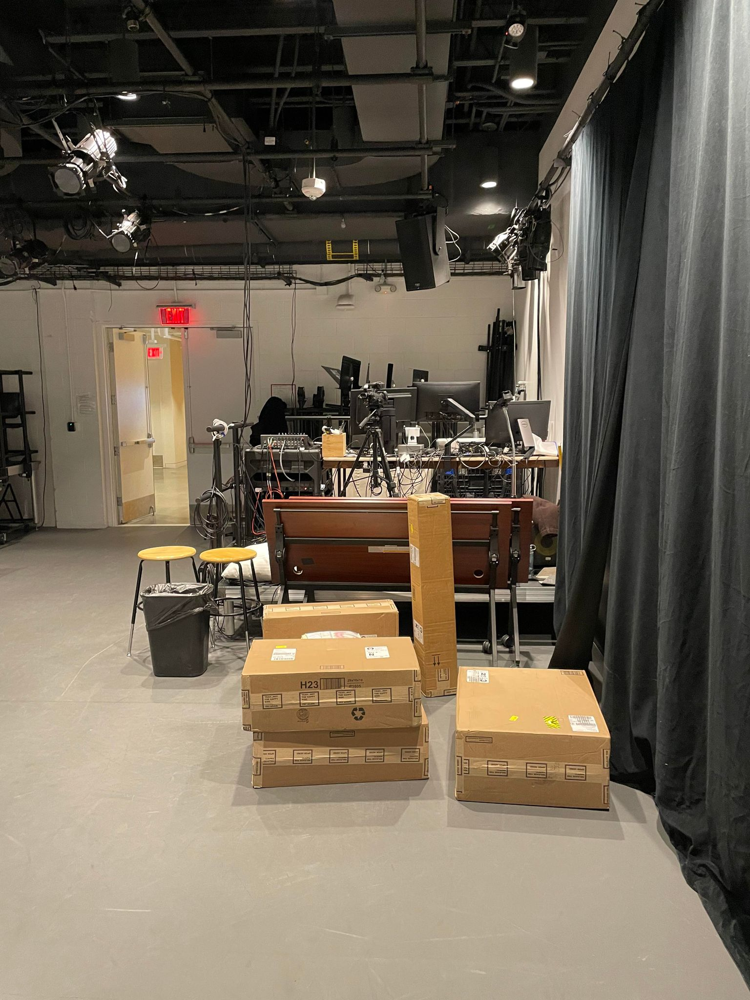
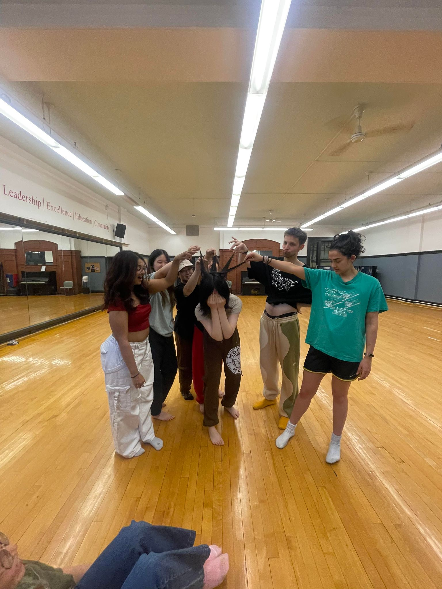
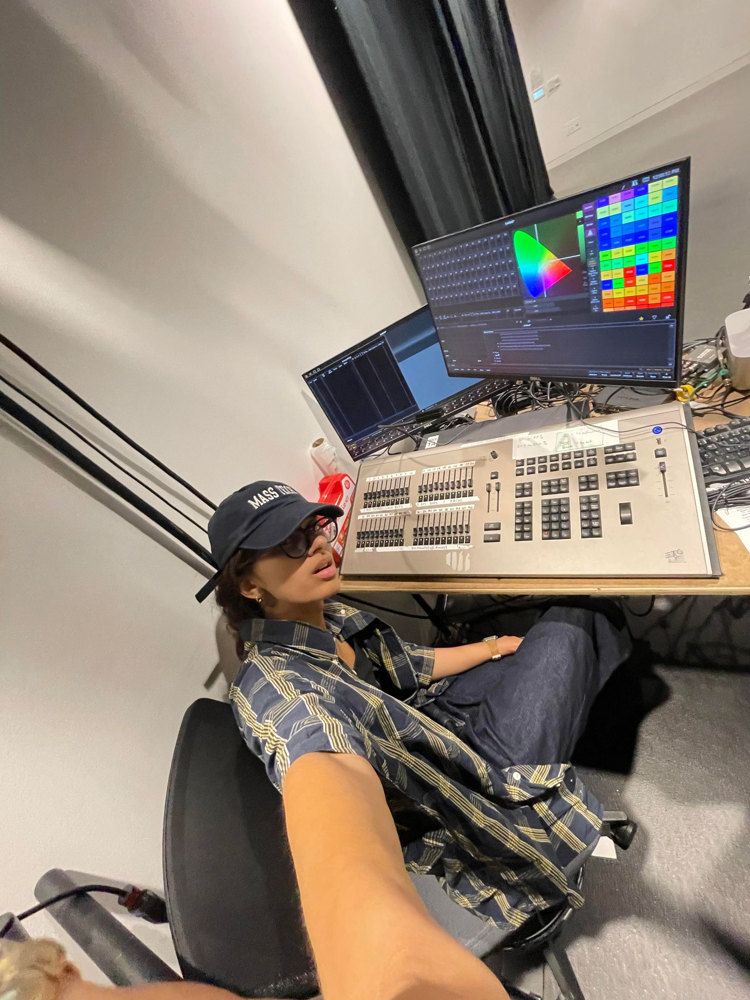

INSULA [2024]
I directed, choreographed, filmed, and edited this piece on community, duality, and multiplicities. I also did the lighting and set design.
This piece touches on the different dualities of isolation/community, stillness/movement, partial/whole, and joy/sadness. This is my largest film production to date as well as my first time choreographing with camera framing and transitions in mind. Unsurprisingly,
it is much more difficult to choreograph this way as opposed to creating a continuous choreography for a stage performance.
This pieces features insula. by Moses Sumney, PRIDE. by Kendrick Lamar, and Love & Death, Pt. 2 by Azekel. Filmed on
a Canon EOS R6 and edited on Adobe Premiere Pro. There was a mix of handheld and gimbal-stabilized shots.
Massive shout out to my beloved dancers, who believed in my scrappy vision, learned this all in 3 weeks, and were so patient with me even when I choreographed on the spot and made them refilm the same scenes 30x! Also special thanks to McKersin Previlus for helping out with space registration and MIT MTA stuff and Josh Higginson who gave me a full lighting crash course while he was in the middle of doing lighting for an event. I filmed this back in May 2024 and didn't touch this for 2 months because I hated the end result at first glance, so lastly a huge shout out to everyone that supported me and pushed me to finish this project.
This is only the first step of a deeper exploration into the combination of film and dance.
Funded by the Council for the Arts at MIT.
Massive shout out to my beloved dancers, who believed in my scrappy vision, learned this all in 3 weeks, and were so patient with me even when I choreographed on the spot and made them refilm the same scenes 30x! Also special thanks to McKersin Previlus for helping out with space registration and MIT MTA stuff and Josh Higginson who gave me a full lighting crash course while he was in the middle of doing lighting for an event. I filmed this back in May 2024 and didn't touch this for 2 months because I hated the end result at first glance, so lastly a huge shout out to everyone that supported me and pushed me to finish this project.
This is only the first step of a deeper exploration into the combination of film and dance.
Funded by the Council for the Arts at MIT.






